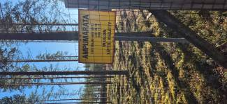
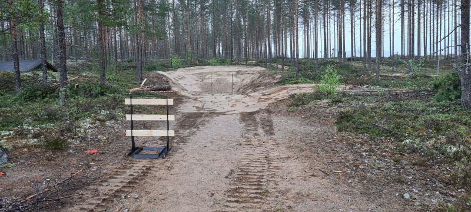

Yleistä radoista
Kaikki ampumaradat sijaitsevat samassa paikassa. Ampumaradan alueella ovat
erillinen liikkuva hirvirata (75 m), kohdistusrata kiväärille (100 m) sekä haulikkorata
(skeet). Turvallisuuden vuoksi ratojen käyttöä yhtä aikaa ei suositella.

Hirvirata
Hirvirata on virallisen määritelmän mukainen 75 metrin ampumamatkalla
oleva liikkuvalla hirvenkuvalla varustettu rata.
Rataa käytetään liikuvan maalin ampumaharjoittelussa sekä
turvallisuussyistä mm. merkkiammuntaan.
Mikäli mukana ei ole radan käytön osaavaa henkilöä, radan käyttöön
pitää sopia erillinen opastus,
Kohdistusrata
Kohdistusrata on nimensä mukaisesti tarkoitettu kiikarin tai
yleisesti tähtäinten kohdistamiseen. Radalla voi toki harjoitella
muutenkin ammuntaa tauluun. Rata on 100 metriä pitkä. Radalla on
kuitenkin ylös käännettäviä taulurakenteita 25 metrin välein.
Huom! Siivoathan pois käyttämäsi paperitaulut tai muut tarvikkeet.

Haulikkorata
Haulikkorata on skeet radan mukainen 8 ampumapaikalla
ja kahdella savikiekkoja heittävällä tornilla varustettu rata.
Mikäli mukana ei ole radan käytön osaavaa henkilöä, radan käyttöön
pitää sopia erillinen opastus. Radalla pitää olla kiekot omasta takaa.